공유압기능사 (2016-04-02 기출문제)
1과목: 임의구분
1. 전기적인 입력신호를 얻어 전기회로를 개폐하는 기기로 반복동작을 할 수 있는 기기는?
- 차동 밸브
- 압력 스위치
- 시퀀스 밸브
- 전자 릴레이
(정답률: 81%)

2. 유관의 안지름을 2.5[cm], 유속을 10[cm/s]로 하면 최대 유량은 약 몇 [cm3/s] 인가?
- 49
- 98
- 196
- 250
(정답률: 51%)
3. 유압실린더를 그림과 같은 회로를 이용하여 단조 기계와 같이 큰 외력에 대항하여 행정의 중간 위치에서 정지시키고자 할 때 점선 안에 들어갈 적당한 밸브는?
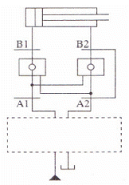
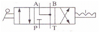
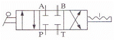
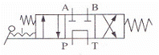
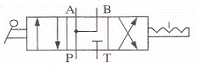
(정답률: 55%)
4. 유압 회로에서 유량이 필요하지 않게 되었을 때 작동유를 탱크로 귀환시키는 회로는?
- 무부하 회로
- 동조 회로
- 시퀀스 회로
- 브레이크 회로
(정답률: 77%)
5. 유압장치의 장점을 설명한 것으로 틀린 것은?
- 에너지의 축적이 용이하다.
- 힘의 변속이 무단으로 가능하다.
- 일의 방향을 쉽게 변환할 수 있다.
- 작은 장치로 큰 힘을 얻을 수 있다.
(정답률: 62%)
6. 도면에서 밸브 ㉠의 입력으로 A가 ON되고, ㉡의 신호 B를 OFF로 해서 출력 Out이 On 되게 한 다음 신호 A를 OFF로 한다면 출력은 어떻게 되는가?
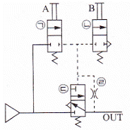
- Out은 OFF로 된다.
- Out은 ON으로 유지된다.
- ㉢의 밸브가 OFF로 된다.
- ㉡의 밸브에서 대기 방출이 된다.
(정답률: 64%)
7. 램형 실린더의 장점이 아닌 것은?
- 피스톤이 필요 없다.
- 공기 빼기 장치가 필요 없다.
- 실린더 자체 중량이 가볍다.
- 압축력에 대한 휨에 강하다.
(정답률: 66%)
8. 상시개방접점과 상시폐쇄접점의 2가지 기능을 모두 갖고 있는 접점은?
- 메이크 접점
- 전환접점
- 브레이크접점
- 유지접점
(정답률: 76%)
9. 다음 중 흡수식 공기 건조기의 특징이 아닌 것은?
- 취급이 간편하다.
- 장비의 설치가 간단하다.
- 외부 에너지 공급원이 필요 없다.
- 건조기에 움직이는 부분이 많으므로 기계적 마모가 많다.
(정답률: 71%)
10. 토크가 T[kgfㆍm]이고, n[rpm]으로 회전하는 공압 모터의 출력(PS)을 구하는 식은?
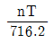
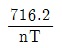
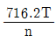
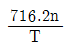
(정답률: 62%)
11. 공유압 제어 밸브를 기능에 따라 분류하였을 때 해당되지 않는 것은?
- 방향제어 밸브
- 압력제어 밸브
- 유량제어 밸브
- 온도제어 밸브
(정답률: 85%)
12. 표와 같은 진리값을 갖는 논리제어회로는?
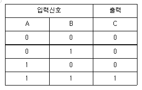
- OR 회로
- AND 회로
- NOT 회로
- NOR 회로
(정답률: 84%)
13. 유압제어 밸브의 분류에서 압력제어 밸브에 해당되지 않는 것은?
- 릴리프 밸브(Relief Valve)
- 스로틀 밸브(Throttle Valve)
- 시퀀스 밸브(Sequence Valve)
- 카운터 밸런스 밸브(Counter Balance Valve)
(정답률: 62%)
14. 다음 중 2개의 입력신호 중에서 높은 압력만을 출력하는 OR 밸브는?
- 셔틀 밸브
- 이압 밸브
- 체크 밸브
- 시퀀스 밸브
(정답률: 70%)
15. 그림에 해당되는 제어 방법으로 옳은 것은?
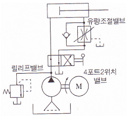
- 미터 인 방식의 전진행정 제어 회로
- 미터 인 방식의 후진행정 제어 회로
- 미터 아웃 방식의 전진행정 제어 회로
- 미터 아웃 방식의 후진행정 제어 회로
(정답률: 58%)
16. 공기탱크와 공기압 회로 내의 공기압력이 규정 이상의 공기 압력으로 될 때에 공기 압력이 상승하지 않도록 대기와 다른 공기압 회로 내로 빼내 주는 기능을 갖는 밸브는?
- 감압 밸브
- 시퀀스 밸브
- 릴리프 밸브
- 압력스위치
(정답률: 64%)
17. 펌프의 송출압력이 50[kgf/cm2], 송출량이 20[L/min]인 유압 펌프의 펌프 동력은 약 몇 [kW]인가?
- 1.0
- 1.2
- 1.6
- 2.2
(정답률: 49%)
18. 방향제어 밸브의 조작방식 중 기계방식의 밸브 기호는?
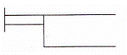
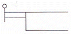
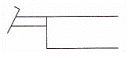
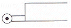
(정답률: 68%)
19. 다음 유압기호의 명칭으로 옳은 것은?
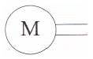
- 공기 탱크
- 전동기
- 내연기관
- 축압기
(정답률: 84%)
20. 그림에서처럼 밀폐된 시스템이 평형 상태를 유지할 경우 힘 F1을 옳게 표현한 식은?
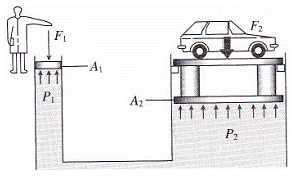
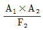
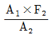
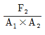
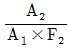
(정답률: 67%)
2과목: 임의구분
21. 공기 압축기를 출력에 따라 분류할 때 소형의 범위는?
- 50~180[W]
- 0.2~14[kW]
- 15~75[kW]
- 75[kW] 이상
(정답률: 66%)
22. 유압 실린더의 중간 정지 회로에 적합한 방향제어 밸브는?
- 3/2way 밸브
- 4/3way 밸브
- 4/2way 밸브
- 2/2way 밸브
(정답률: 71%)
23. 그림과 같은 유압 탱크에서 스트레이너를 장착할 가장 적절한 위치는?
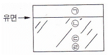
- ㉠과 같이 유면 위쪽
- ㉡과 같이 유면 바로 아래
- ㉢과 같이 바닥에서 좀 떨어진 곳
- ㉣과 같이 바닥
(정답률: 70%)
24. 다른 실린더에 비하여 고속으로 동작할 수 있는 공압 실린더는?
- 충격 실린더
- 다위치형 실린더
- 텔레스코프 실린더
- 가변 스트로크 실린더
(정답률: 63%)
25. 면적을 감소시킨 통로로서 길이가 단면 치수에 비하여 비교적 짧은 경우의 유동 교축부는?
- 초크(Choke)
- 플런저(Plunger)
- 스풀(Spool)
- 오리피스(Orifice)
(정답률: 67%)
26. 다음 기호로 보고 알 수 없는 것은?
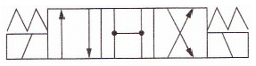
- 포트의수
- 위치의 수
- 조작방법
- 접속의 형식
(정답률: 65%)
27. 유압유에서 온도 변화에 따른 점도의 변화를 표시하는 것은?
- 비중
- 동점도
- 점도
- 점도지수
(정답률: 82%)
28. 유압 장치에서 유량제어 밸브로 유량을 조정할 경우 실린더에서 나타나는 효과는?
- 정지 및 시동
- 운동 속도의 조절
- 유압의 역류 조절
- 운동 방향의 결정
(정답률: 79%)
29. 전기 시퀀스 제어회로를 구성하는 요소 중 동작은 수동으로 되나 복귀는 자동으로 이루어지는 것은?
- 토글 스위치(Toggls Switch)
- 선택 스위치(Selector Switch)
- 푸시버튼 스위치(Pushbutton Switch)
- 로터리 캠 스위치(Rotary Cam Switch)
(정답률: 77%)
30. 작동유가 갖고 있는 에너지의 축적작용과 충격압력의 완충작용도 할 수 있는 부속기기는?
- 스트레이너
- 유체 커플링
- 패킹 및 개스킷
- 어큐뮬레이터
(정답률: 63%)
31. SCR의 활용으로 옳지 않은 것은?
- 수은정류기
- 자동제어장치
- 제어용 전력증폭기
- 전류조정이 가능한 직류 전원설비
(정답률: 64%)
32. 대칭 3상 교류 전압에서 각 상의 위상차는?
- 60°
- 90°
- 120°
- 240°
(정답률: 75%)
33. 3상 유도 전동기의 Y-△ 결선 변환 회로에 대한 설명으로 옳지 않은 것은?
- Y결선으로 기동한다.
- 기동전류가 1/3로 줄어든다.
- 정상 운전 속도일 때 △결선으로 변환한다.
- 기동 시 상전압을 √3배 승압하여 기동한다.
(정답률: 56%)
34. P[W] 전구를 t시간 사용하였을 때의 전력량[Wh]은?
- tP
- t2P
- P/t
- P2/t
(정답률: 69%)
35. 내부저항 5[kΩ]의 전압계 측정범위를 5배로 하기 위한 방법은?
- 20[kΩ]의 배율기 저항을 병렬 연결한다.
- 20[kΩ]의 배율기 저항을 직렬 연결한다.
- 25[kΩ]의 배율기 저항을 병렬 연결한다.
- 25[kΩ]의 배율기 저항을 직렬 연결한다.
(정답률: 52%)
36. 교류의 크기를 나타내는 방법이 아닌 것은?
- 순시값
- 실횻값
- 최댓값
- 최솟값
(정답률: 67%)
37. 가동코일형 전류계에서 전류측정 범위를 확대시키는 방법은?
- 가동코일과 직렬로 분류기 저항을 접속한다.
- 가동코일과 병렬로 분류기 저항을 접속한다.
- 가동코일과 직렬로 배율기 저항을 접속한다.
- 가동코일과 직ㆍ병렬로 배율기 저항을 접속한다.
(정답률: 54%)
38. 교류 전류에 대한 저항(R), 코일(L), 콘덴서(C)의 작용에서 전압과 전류의 위상이 동상인 회로는?
- R만의 회로
- L만의 회로
- C만의 회로
- R, L, C 직ㆍ병렬회로
(정답률: 64%)
39. 무부하 운전이나 벨트 운전을 절대로 해서는 안 되는 직류 전동기는?
- 직권 전동기
- 복권 전동기
- 분권 전동기
- 타여자 전동기
(정답률: 66%)
40. 그림은 어떤 회로를 나타낸 것인가?
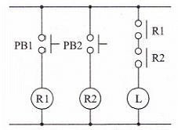
- OR 회로
- 인터록 회로
- AND 회로
- 자기유지 회로
(정답률: 70%)
3과목: 임의구분
41. 직선 전류에 의한 자기장 방향을 알려고 할 때 적용되는 법칙은?
- 패러데이의 법칙
- 플레밍의 왼손 법칙
- 플레밍의 오른손 법칙
- 앙페르의 오른나사 법칙
(정답률: 74%)
42. 자석의 성질에 관한 설명으로 옳지 않은 것은?
- 자석에는 N극과 S극이 있다.
- 자극으로부터 자력선이 나온다.
- 자기력선은 비자성체를 투과한다.
- 자력이 강할수록 자기력선의 수가 적다.
(정답률: 81%)
43. 시간의 변화에 따라 각 계전기나 접점 등의 변화 상태를 시간적 순서에 의해 출력상태를 (ON, OFF), (H, L), (1, 0)등으로 나타낸 것은?
- 플로 차트
- 실체 배선도
- 타임 차트
- 논리 회로도
(정답률: 75%)
44. 전압이 가해지고 일정 시간이 경과한 후 접점이 닫히거나 열리고, 전압을 끊으면 순시 접점이 열리거나 닫히는 것은?
- 전자 개폐기
- 플리커 릴레이
- 온딜레이 타이머
- 오프딜레이 타이머
(정답률: 59%)
45. 전기저항과 열의 관계를 설명한 것으로 틀린 것은?
- 저항기는 대부분 정특성을 갖는다.
- 전구의 필라멘트는 부특성을 갖는다.
- 온도상승과 저항값이 비례하는 것을 정특성이라 한다.
- 온도상승과 저항값이 반비례하는 것을 부특성이라 한다
(정답률: 63%)
46. 도면에서 척도의 표시가 “1 : 2”로 표시된 것은 무엇을 의미하는가?
- 배척
- 현척
- 축척
- 비례척이 아님
(정답률: 67%)
47. 다음 중 숨은선 그리기의 예로 적절하지 않은 것은?
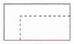
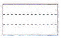
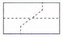
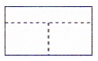
(정답률: 80%)
48. 그림과 같이 물체의 구멍, 홈 등 특정 부분만의 모양을 도시하는 것을 목적으로 하는 투상도의 명칭은?
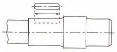
- 국부 투상도
- 보조 투상도
- 부분 투상도
- 회전 투상도
(정답률: 76%)
49. 그림과 같은 입체도에서 화살표 방향을 정면으로 한다면 좌측면도로 적합한 투상도는? (단, 투상도는 제3각법을 이용한다.)
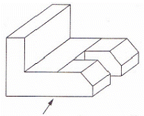
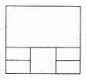
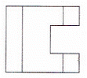
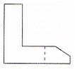
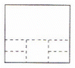
(정답률: 73%)
50. 다음 그림의 치수 기입에 대한 설명으로 틀린 것은?
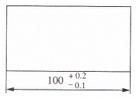
- 공차는 0.1 이다.
- 기준 치수는 100 이다.
- 최대허용치수는 100.2 이다.
- 최소허용치수는 99.9 이다.
(정답률: 82%)
51. 나사의 도시 방법에 관한 설명 중 틀린 것은?
- 측면에서 본 그림 및 단면도에서 나사산의 봉우리는 굵은 실선으로 나타낸다.
- 단면도에 나타나는 나사 부품에서 해칭은 나사산의 골 밑을 나타내는 선까지 긋는다.
- 나사의 끝면에서 본 그림에서는 나사의 골 밑은 가는 실선으로 그린 원주의 3/4에 거의 같은 원의 일부로 표시한다.
- 숨겨진 나사를 표시하는 것이 필요한 곳에서는 산의 봉우리와 골 밑은 가는 파선으로 표시한다.
(정답률: 48%)
52. SS400로 표시된 KS 재료기호의 400은 어떤 의미인가?
- 재질 번호
- 재질 등급
- 최저인장강도
- 탄소 함유량
(정답률: 60%)
53. 12[kNㆍm]의 토크를 받는 축의 지름은 약 몇 [mm] 이상이어야 하는가? (단, 허용 비틀림 응력은 50[MPa]이라 한다.)
- 84
- 107
- 126
- 145
(정답률: 39%)
54. 평벨트 전동장치와 비교하여 V벨트 전동장치의 장점에 대한 설명으로 틀린 것은?
- 엇걸기로도 사용이 가능하다.
- 미끄럼이 적고 속도비를 크게 할 수 있다.
- 운전이 정숙하고 충격을 완화하는 작용을 한다.
- 비교적 작은 장력으로 큰 회전력을 전달할 수 있다.
(정답률: 60%)
55. 모듈 5이고 잇수가 각각 40개와 60개인 한쌍의 표준 스퍼기어에서 두 축의 중심거리는?
- 100[mm]
- 150[mm]
- 200[mm]
- 250[mm]
(정답률: 58%)
56. 애크미 나사라고도 하며 나사산의 각도가 인치계에서는 29°이고, 미터계에서는 30°인 나사는?
- 사다리꼴 나사
- 미터 나사
- 유니파이 나사
- 너클 나사
(정답률: 62%)
57. 둥근 봉을 비틀 때 생기는 비틀림 변형을 이용하여 만드는 스프링은?
- 코일 스프링
- 벌류트 스프링
- 접시 스프링
- 토션 바
(정답률: 58%)
58. SI단위계의 물리량과 단위가 틀린 것은?
- 힘 - [N]
- 압력 - [Pa]
- 에너지 - [dyne]
- 일률 - [W]
(정답률: 78%)
59. 고압 탱크나 보일러의 리벳이음 주위에 코킹(Caulking)을 하는 주목적은?
- 강도를 보강하기 위해
- 기밀을 유지하기 위해서
- 표면을 깨끗하게 유지하기 위해서
- 이음 부위의 파손을 방지하기 위해서
(정답률: 62%)
60. 나사의 풀림 방지법에 속하지 않는 것은?
- 스프링 와셔를 사용하는 방법
- 로크 너트를 사용하는 방법
- 부시를 사용하는 방법
- 자동 조임 너트를 사용하는 방법
(정답률: 65%)